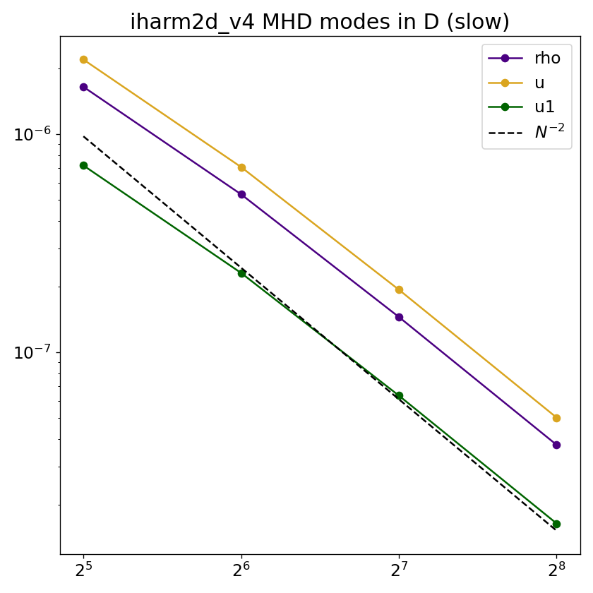
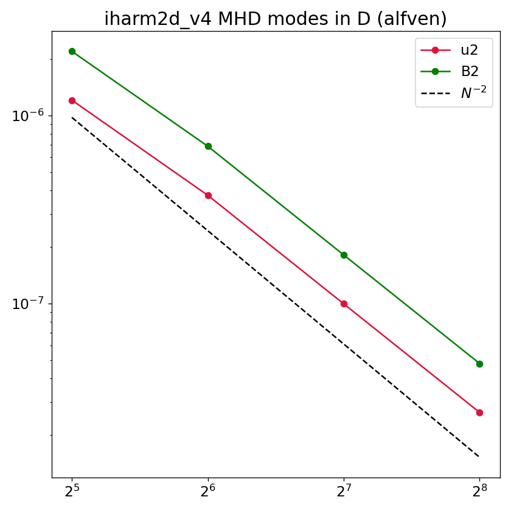
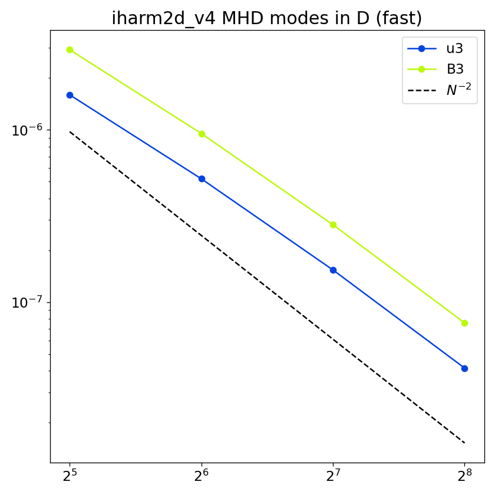

Linear MHD modes (1D)
Overview
Four linear MHD eigenmodes — entropy, slow, Alfvén, and fast — are initialized as small-amplitude sinusoidal perturbations propagating along one coordinate axis through a magnetized background. Selecting nmode chooses which eigenmode is excited; selecting idim sets the propagation direction. Because the wave propagates strictly along a coordinate axis aligned with the background magnetic field, this is a 1D problem: the grid collapses to a single strip of cells (not counting ghost zones; \(N_2 = 1\) for idim=1, \(N_1 = 1\) for idim=2). All eight primitives are tracked, and the analytic solution is known at all times, making this a precise test of the MHD wave speeds and the accuracy with which the code propagates each mode individually.
Setup
The domain is the unit square \([0,1]\times[0,1]\) in Minkowski coordinates with periodic boundaries. The background state is
where \(\hat{e}_{\rm idim}\) is the unit vector along the propagation axis (idim=1 \(\Rightarrow\) \(\hat{x}\), idim=2 \(\Rightarrow\) \(\hat{y}\)), i.e. the field is aligned with the propagation direction. The initial state is
with amplitude \(A = 10^{-4}\) and \(k = 2\pi\) (one wavelength in the box). The perturbation eigenvector \(\delta q\) for each mode is:
nmode |
Mode | Perturbed variables | \(\lvert\omega\rvert\) |
|---|---|---|---|
| 0 | Entropy | \(\delta\rho\) only | \(t_f\) |
| 1 | Slow | \(\delta\rho,\,\delta u,\,\delta\tilde{u}_{\parallel}\) | \(2.742\) |
| 2 | Alfvén | \(\delta\tilde{u}_{\perp}^{(1)},\,\delta B_{\perp}^{(1)}\) | \(3.441\) |
| 3 | Fast | \(\delta\tilde{u}_{\perp}^{(2)},\,\delta B_{\perp}^{(2)}\) | \(3.441\) |
where \(\parallel\) denotes the propagation direction and \(\perp^{(1,2)}\) denote the two transverse directions. The final time is set automatically to one full wave period \(t_f = 2\pi/|\omega|\). The frequencies are evaluated for the given background state above with \(k = 2\pi\sqrt{2}\) and adiabatic index \(\Gamma = 4/3\). Note that the Alfvén and fast modes are degenerate for propagation along \(\mathbf{B}\).
Parameters
Problem-specific runtime parameters are:
| Parameter | Meaning |
|---|---|
nmode |
Eigenmode: 0=entropy, 1=slow, 2=Alfvén, 3=fast |
idim |
Propagation direction: 1=x1, 2=x2 |
Relevant compile-time parameters are:
| Parameter | Default | Notes |
|---|---|---|
N1TOT |
64 |
Set to \(N\), keep N2TOT=1 when idim=1; swap for idim=2 |
N2TOT |
1 |
Set to \(N\), keep N1TOT=1 when idim=2; swap for idim=1 |
METRIC |
MINKOWSKI |
|
RECONSTRUCTION |
LINEAR |
|
X{1,2}{L,R}_BOUND |
PERIODIC |
Convergence
Because tf is set to exactly one wave period, the analytic solution at \(t_f\) equals the initial eigenmode. The L1 error for each primitive \(q\) is
where \(q_0\) is the background value and only primitives with \(\delta q \neq 0\) for the selected mode are included. The expected slope is \(L_1 \propto N^{-2}\) as shown below,


